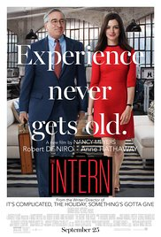
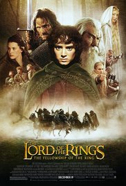

1. The Godfather

Genre: Crime, Drama
Release date: 24 august 1972 (UK)
Description:
The aging patriarch of an organized crime dynasty transfers control of his clandestine empire to his reluctant son.
2. The Social Network
Genre: Biography, Drama
Release date: 15 october 2010 (UK)
Description:
Harvard student Mark Zuckerberg creates the social networking site that would become known as Facebook, but is later sued by two brothers who claimed he stole their idea, and the co-founder who was later squeezed out of the business.
3. The Intern
Genre: Comedy, Drama
Release date: 15 october 2010 (UK)
Description:
70-year-old widower Ben Whittaker has discovered that retirement isn't all it's cracked up to be. Seizing an opportunity to get back in the game, he becomes a senior intern at an online fashion site, founded and run by Jules Ostin.
4. The Lord of the Rings
Genre: Adventure, Fantasy, Drama
Release date: 19 december 2001 (UK)
Description:
A meek Hobbit from the Shire and eight companions set out on a journey to destroy the powerful One Ring and save Middle Earth from the Dark Lord Sauron.